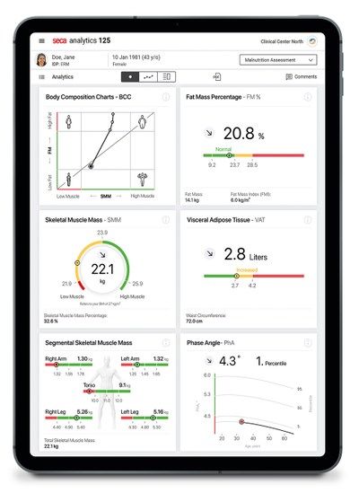

Establish a meaningful baseline
Agree the question, record the context and select a small number of relevant parameters.
ENGAGE · PATIENT CONVERSATIONS
“Is what I’m doing working?” A meaningful baseline and a clear explanation of change can give the next patient conversation a stronger starting point.
THE VISIBLE PROGRESS PLAYBOOK
For weight management, long-term treatment and preventative health services.
Make the purpose of measurement clear. Explain what the results can show, what they cannot show and how they fit the patient’s own priorities.
Read the complete playbookAgree the question, record the context and select a small number of relevant parameters.
Distinguish fat, skeletal muscle and other information without overwhelming the patient.
Use accessible language and check understanding. Avoid treating colours or a single score as a diagnosis.
Compare measurements thoughtfully, with attention to preparation and possible variation.
Agree why another review would be useful and what you will discuss together.
CONNECTED RESULTS

seca Analytics 125 supports browser-based evaluation and visualisation of body composition changes. seca myAnalytics provides patient access to results when their healthcare provider enables it.
Plan how you will introduce access, explain the results and provide an alternative for people who cannot or do not want to use an app.
Explore seca myAnalyticsYOUR NEXT STEP
Explore how baseline and follow-up results could be presented within your service.
Explore the right fit for your service.
Sources checked 14 September 2026. General clinical education for healthcare professionals. Use current instructions for use and clinical judgement for individual patients.